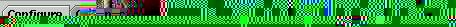

Getting Started
Getting Started
Welcome to VR Juggler vjcontrol! This page will tell you how to set up
and run the vjcontrol program. It assumes that VR Juggler
has already been installed on your system.
Setup
If you're reading this from the vjcontrol help menu, you've probably done
this already, but if not, these are the steps that need to be taken before
using vjcontrol:
- Make sure your $VJ_BASE_DIR environment variable is set to the directory where VR Juggler is installed.
- Create a directory called .vjconfig in your home directory.
This is where VjControl will store its own preferences information, and is a good general place to store any custom Juggler config files you may make.
- You should add the directory ${VJ_BASE_DIR}/bin to your $PATH.
- Find out what version of Java is installed on your machine (if you don't
know how, click here). Vjcontrol prefers java
1.2, but can be used with java 1.1.
- Make sure your $JDK_HOME environment variable is set to the
directory where java is installed.
- Find out where the Juggler config files you should use are located.
The Juggler distribution includes a number of sample config files
in the directory $VJ_BASE_DIR/Data/configFiles. Your system
administrators may also have a location for customized config files.
Starting VjControl
If you are using JDK 1.2, type:
vjcontrol
If you are using JDK 1.1, type:
vjcontrol1.1
The vjcontrol program will start up and open its main window. By default,
vjcontrol will load the main Chunk Description file,
$VJ_BASE_DIR/Data/chunksDesc.
vjcontrol's Preferences control what files
are loaded automatically on startup. There are also
command-line arguments that can be used to load files at startup.
The Main Window
The main Juggler window consists of a set of panels accessed by a row of tabs:

Clicking on a tab exposes its panel; each panel gives access to a particular
Juggler function:
- Configure
- Panel for editing and viewing Juggler config files. This is the most
important option for new users.
- Connection
- Panel for connecting to Juggler applications. Used for dynamic reconfiguration.
- Descriptions
- Panel used for editing and viewing Juggler Chunk Description files.
- Org Tree
- Panel used for editing the Chunk Organization Tree, which controls how
the chunks in a file are organized in the Configure panel.
- Messages
- Panel used for logging error and informational messages from vjcontrol.
- Performance
- Panel used for viewing Juggler performance data files.
In addition to these tabbed panels, the vjcontrol main window also
has a fairly typical set of File, Help, and
Options menus.